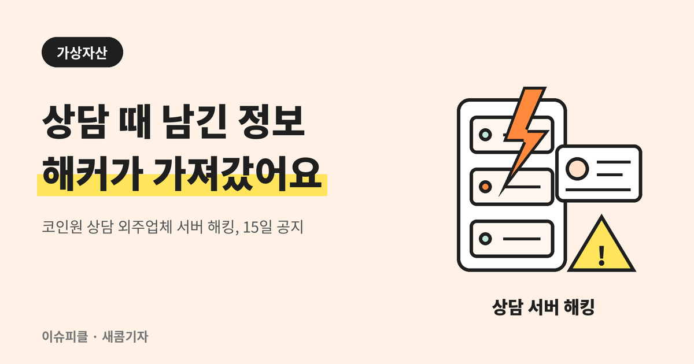
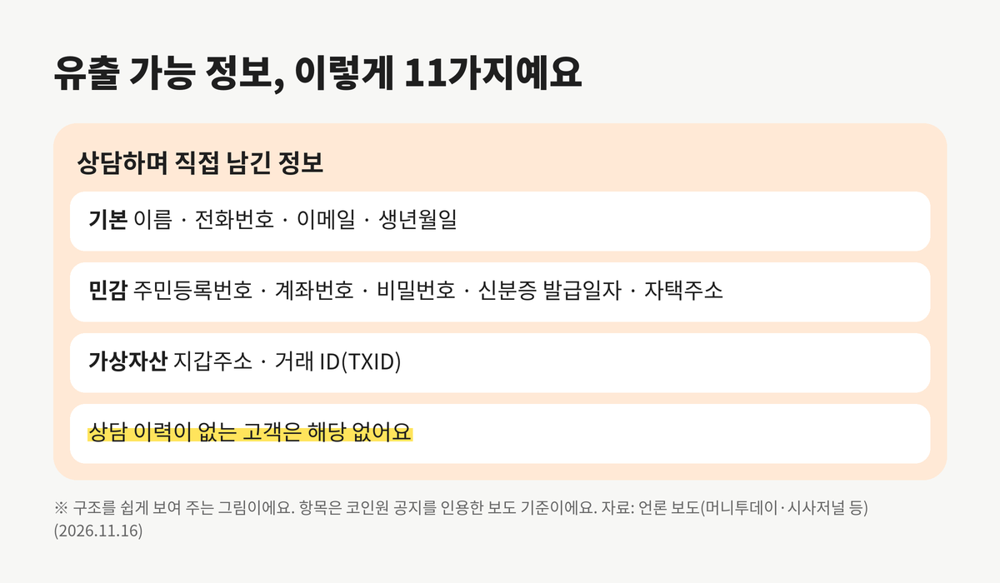
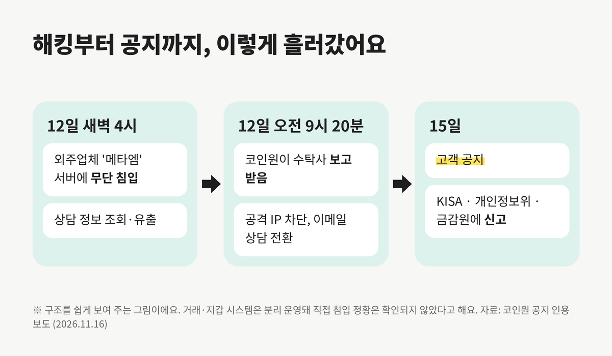
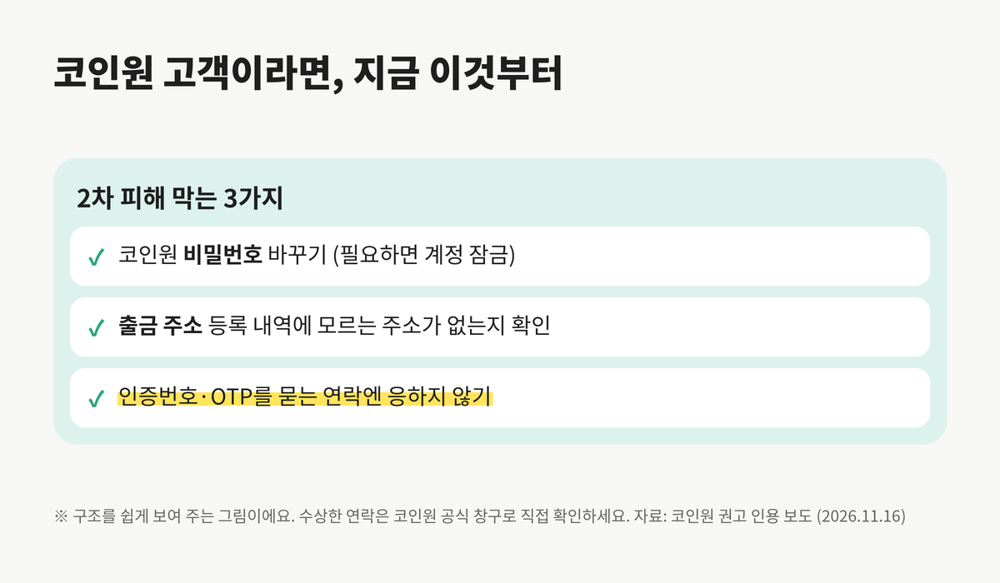

무슨 일이야?

가상자산 거래소 코인원의 고객센터 업무를 대신 맡던 외주업체가 해킹을 당했어요. 거래소 본체가 아니라 상담을 맡긴 협력사 쪽이 뚫렸다는 점이 이번 사고의 특징이에요.
코인원에 따르면 공격자는 12일 오전 4시쯤 메타엠 서버에 들어가 상담 정보를 조회하거나 빼 갔어요. 이름·전화번호·이메일·생년월일 같은 기본 정보에 계좌번호·비밀번호·주민등록번호·신분증 발급일자·자택주소, 가상자산 지갑주소와 거래 ID(TXID)까지 11가지 항목이 유출 가능 정보로 꼽혔어요. 모두 고객이 상담하면서 직접 남긴 정보이고, 상담 이력이 없는 고객은 해당되지 않아요.

코인원은 회원 계정, 거래, 가상자산 지갑 시스템이 외주업체 서버와 분리돼 운영된다고 설명했어요. 지금까지 거래소 시스템이 직접 침입당한 정황은 확인되지 않았다고 밝혔어요. 사고를 안 직후에는 공격에 쓰인 인터넷주소(IP)를 막고 고객센터를 이메일 상담으로 바꿨어요.

왜 화제야?
최근 빗썸·고팍스 등 가상자산 업계에서 해킹이 잇따른 가운데, 이번엔 외주업체가 통로가 됐어요. 업무를 맡긴 회사도 수탁사 보안을 챙길 책임이 있다는 지적이 나와요. 코인원은 "위탁사로서 깊은 책임감을 느낀다"며 사과하고 협력사 보안 체계를 점검하겠다고 밝혔어요.
코인원은 12일 오전 9시 20분 수탁사의 보고로 사고를 알았고, 고객 공지는 사흘 뒤인 15일에 나왔어요. 한국인터넷진흥원(KISA)·개인정보보호위원회·금융감독원에도 신고했어요. 정확한 유출 일시와 경위는 아직 조사 중이에요. 앞으로 나올 조사 결과에 따라 추가 안내가 있을 수 있어요.
앞으로 볼 점
코인원은 2차 피해를 막으려면 비밀번호를 바꾸고, 필요하면 계정을 잠그고, 출금 주소 등록 내역을 확인하라고 권했어요. 거래소라며 인증번호나 OTP를 묻거나 지갑 주소를 바꾸라고 하는 연락에는 응하지 마세요. 이상한 전화나 문자를 받았다면 코인원 공식 창구에 직접 확인하는 게 안전해요.

새콤기자 · 긴 기사도 새콤하게 세 줄로 🥒
아래 근거 기사를 바탕으로 정리했어요.